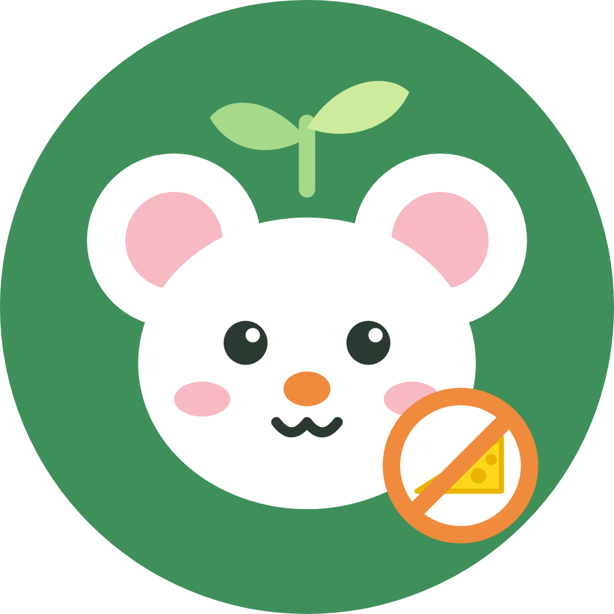

NO CHEESE, MORE SMILE.
チーズがなくても、
まいにちおいしい。
野菜と穀物と発酵のちからで、だれもが安心して食べられる料理を。
アンチチーズアカデミーは、「チーズに頼らないおいしさ」を学ぶスクールです。
講座を見る

NO CHEESE, MORE SMILE.
チーズがなくても、
まいにちおいしい。
野菜と穀物と発酵のちからで、だれもが安心して食べられる料理を。
アンチチーズアカデミーは、「チーズに頼らないおいしさ」を学ぶスクールです。
講座を見る
NEWS
お知らせ
2026.10.15
お知らせ
渋谷校（仮）を2027年春に新規開校いたします
2026.09.30
プレスリリース
受講生チームが「全国プラントベース料理コンテスト」でグランプリを受賞しました
2026.09.01
企業情報
「食の多様性推進事業補助金」の交付が決定しました
お知らせ一覧へ
PICKUP
ピックアップ
🎁
第3弾「アンチュー」オリジナルグッズが当たるキャンペーン開催中
🎬
看板講座「森のヴィーガン料理」こだわりのスペシャルムービー公開中
🍰
乳製品を使わない「ミルクフリー製菓コース」特設ページ
COMPANY
企業情報
| 社名 | 株式会社アンチチーズアカデミー |
|---|---|
| 設立 | 2012年4月1日 |
| 代表者 | 代表取締役 地位図 無太郎 |
| 資本金 | 3,000万円 |
| 従業員数 | 48名（2026年10月現在） |
| 所在地 | 〒150-0000 東京都渋谷区〇〇町0-0-0 グリーンビル5F |
| 事業内容 | 料理教室の運営／チーズフリー食品の開発・販売／飲食店向けメニュー開発コンサルティング |
| 取引銀行 | 〇〇銀行 渋谷支店、△△信用金庫 本店 |
東京都渋谷区にて創業。「森のヴィーガン料理」講座を開講
横浜校を開校。受講生累計1,000名を突破
チーズフリー食品ブランド「NO CHEESE KITCHEN」を立ち上げ
公式キャラクター「アンチュー」誕生
「ミルクフリー製菓コース」を開講。受講生累計10,000名を突破
〒150-0000
東京都渋谷区〇〇町0-0-0 グリーンビル5F
JR「渋谷駅」ハチ公口より徒歩8分
東京メトロ「表参道駅」B2出口より徒歩10分
TEL：03-0000-0000（平日 10:00〜18:00）